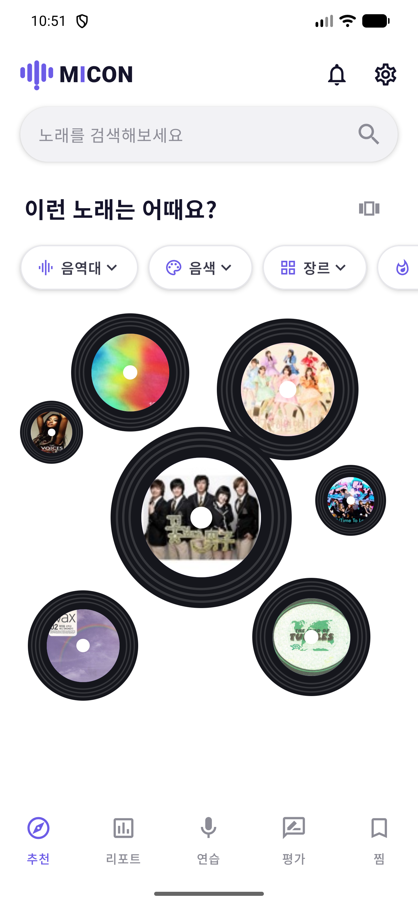

TEAM B110 · AUDIO INTELLIGENCE
목소리를 데이터로,
데이터로 찾는 나의 노래.
음역과 음색을 분석해 부르기 좋은 곡과 키를 찾고,
실시간 음정 피드백으로 연습까지 연결한 Android 서비스입니다.
Kotlin · Jetpack Compose · Spring Boot · FastAPI · PyTorch
FIND YOUR OWN SOUND
당신의 다음 애창곡,
목소리 안에 있어요.



나에게 맞는 곡으로
한 곡 더, 자신 있게.
한 곡 더, 자신 있게.
실제 Android 앱의 개발 단계 캡처입니다. 화면 속 분석 수치와 곡은 예시이며, 현재 버전과 다를 수 있습니다.
THE PROBLEM
취향만으로는,
부르기 좋은 노래를 찾기 어렵습니다.
MICON은 선곡의 기준을 취향에서 음역과 음색으로 확장했습니다.
측정한 목소리를 곡 데이터와 비교하고, 추천 키와 연습 피드백까지 하나의 흐름으로 연결합니다.
익숙했던 노래방의 순간
“이 노래, 키가 너무 높은데…”
“한 키만 더 내려볼까?”
“결국 또 부르던 노래네.”
MICON과 함께라면막연한 선곡 대신,
막연한 선곡 대신,
내 목소리라는 기준.
- 편안하게 부를 수 있는 음역을 알고
- 음역과 음색에 맞는 노래를 찾고
- 나에게 맞는 키에서 연습을 시작해요
EXPLORE THE PROJECT